Archived from https://btribble.com/designing-for-complexity/ on 2026-10-18
It’s easy to make things complicated when you’re designing an interface for complex work. In this case study I outline how we kept things simple and relatable while still allowing for powerful interactions in a new analytics dashboard.
An explainer video I created for the analytics department
The Issue
Like many large organisations, Colorado University have a problem — their data is everywhere, siloed, and accessible only to individual departments — each one with their own jerry-rigged workflow to access, analyse and gain insights from the information.
Over the past few months, I’ve had the privilege to work with the University staff and a talented international team assembled through Toptal on an integration project — Analytics 360.
The Vision
The vision is to create an integrated platform for exploring and analysing University data. The aim is for it to be accessible enough for anyone to get involved, but adaptable enough for department specialists to be able to really dig into the information. We hope to be able to include every database across campus, and create a platform that is so compelling that University staff ditch their old workflows and happily engage with the new system!
Game On
The Design Challenge
Our users need to deal with a wide range of data sources, compare and contrast them, recall things quickly, and explore new sources quickly and intuitively.
How can we create a user interface that is flexible enough to deal with the needs of a wide range of users across campus and beyond? We need to create something that is familiar enough for users to be able to get started immediately, with the minimum of friction. If we are successful, our users will migrate quickly to the new platform, and abandon their old workflows for key tasks.
Our Solution
The Devil You Know
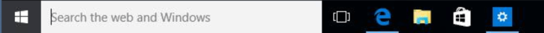
Windows 10 Taskbar and Search
We had a complex system to develop, with a lot of moving parts and scope for flexibility. How to help users cope? First of all, we aimed for familiarity. Rather than reinvent the wheel, we used common conventions that we knew they would be familiar with: The Windows ‘Start’ button and Taskbar.
We also included close, minimize and maximise buttons, recognizable from any mouse driven graphic user interface. These elements all perform their usual function in an environment that users would be able to use straight away.
Simple Windowing
That said, the ‘classic’ mouse and keyboard graphical user interface has one major downfall — the windowing system is rather too flexible, and often leaves users hunting around for information they need, or frustratedly dealing with overlapping windows.
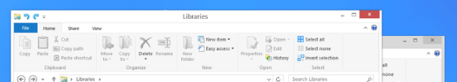
Overlapping Windows
To avoid these issues, we have created a simple ‘tiled’ window system, that automatically ‘snaps’ windows in place, with a maximum (for now) of 2 windows visible at a time. Elements like the Sidebar also avoid overlapping windows by ‘shrinking’ them to make room when open.
Tutorials
Finally, we have begun the process of adding a simple ‘walkthrough’ for first-time users, and contextual mini-tutorials that are activated when users try new features for the first time.
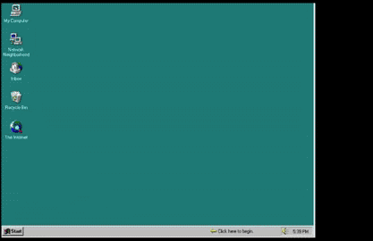
Windows 95 Introduction. Been around a while, right?
How We Started
Concept
The need has grown in recent years to create a new way to deal with the immense amounts of financial and administrational data being generated at the University. Databases are currently siloed, and workflows across campus are currently complex and limited in their scope.
Initial Interviews
I began the design process by interviewing as many people as time would allow about the project:
What did they hope to achieve?
What does success look like to them?
How can we measure success?
What types of data are you currently dealing with?
What apps or processes do you currently use?
What are the main problems you encounter in your current work with data?
What would your dream analytics app do for you?
Can you draw a picture of how it might look?
Time was short before a demo date with the University’s Chief Financial Officer, so these were limited to begin with to the Director of Reporting & Analytics, the IT Program Manager, and a research scientist (‘Principal Investigator’, in University speak).
Outcomes
The interviews enabled me to get a much better idea of the main challenges our potential users are facing in their work, and ways we might solve their problems. The sketching exercises were particularly invaluable — it’s always fascinating to get that visual representation of a potential user interface directly from someone who might use it.
Most of the user needs fit well within the framework we were currently developing, so the framing worked well. The main outcomes were a push for flexibility from our team, so that users could ‘craft’ the interface for a whole range of different tasks.
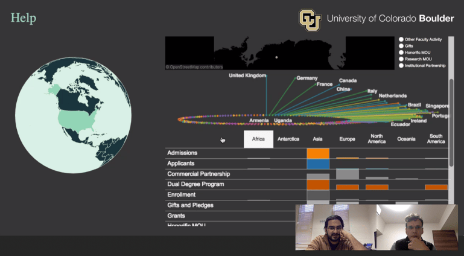
😬 The look of the dashboard when I first spoke to the team!
Green-Field Development
As a designer, creating a new platform from scratch is always really exciting. Raza and our distributed team had already created a whole back-end for the system by the time I got on board, but no work had been done on the visual side, so we had a very open playing field.
Interaction patterns
A simple structure had already been built — 2 window panes, that could either be filled with a ‘tree’ style menu system or some analytics:
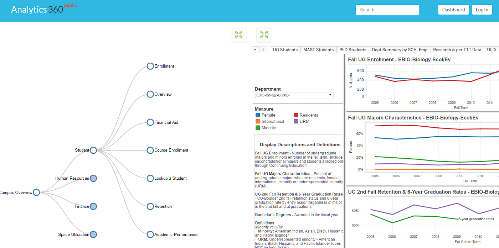
The first I saw of the new platform.
Although I really liked the simplicity of this layout, and the ‘2-pane’ view, I wanted to get back to basics here and explore further, so I began working on paper to sketch out some rough ideas.
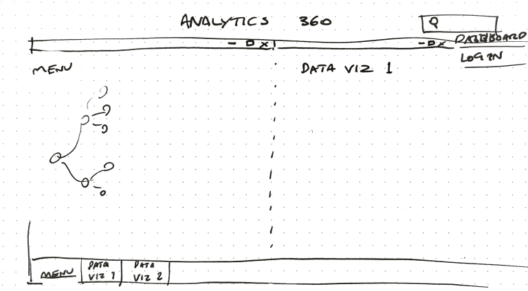
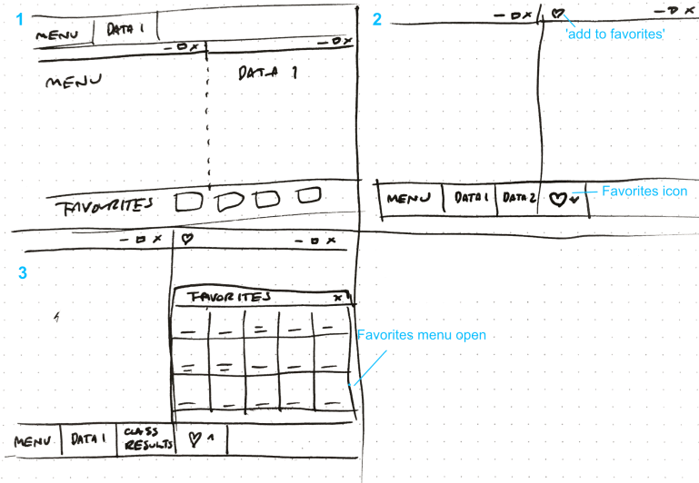
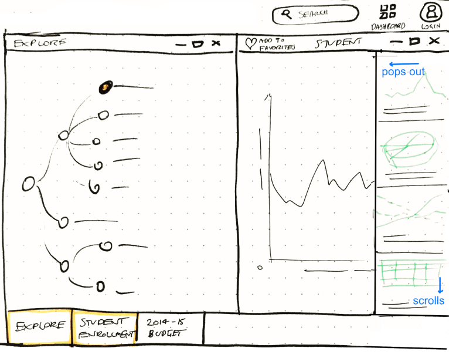
Initial sketches (click to zoom)
This was a quick process — after batting some ideas around for a day, we were able to settle on a vision and start designing at a higher fidelity.
Mid-fidelity wireframes
Sketched prototypes are all very well, but to really start testing layout and ‘copy’ (in-app text) you need to go up a level of fidelity. Using an online app called Realtimeboard, we were able to collaborate on ideas directly.
One of our key goals is ease-of-use and familiarity, so we settled on some design patterns that will be well-known to our users, like ‘windows’, and a ‘Start menu’ / ‘Taskbar’ style interface.
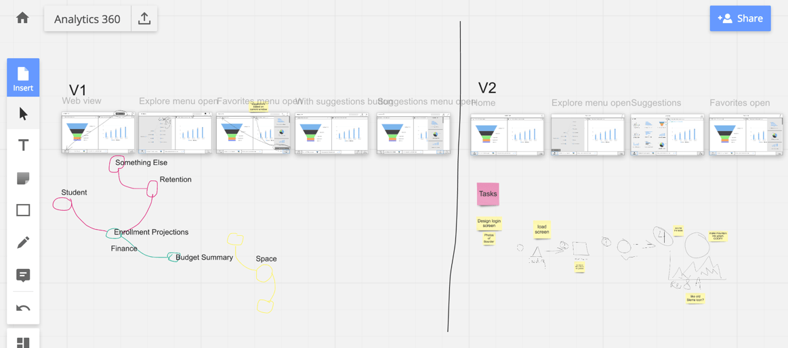
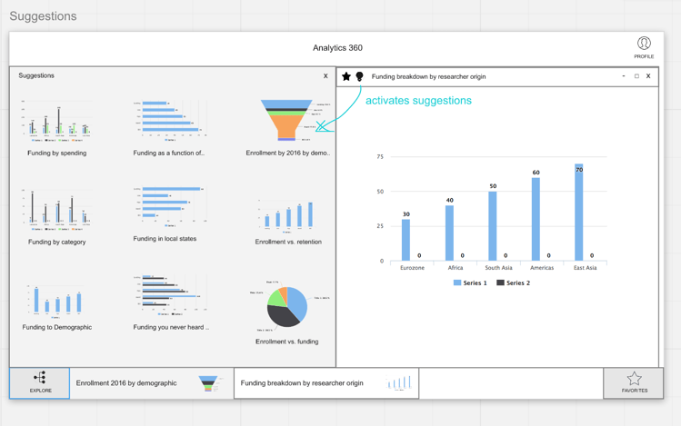
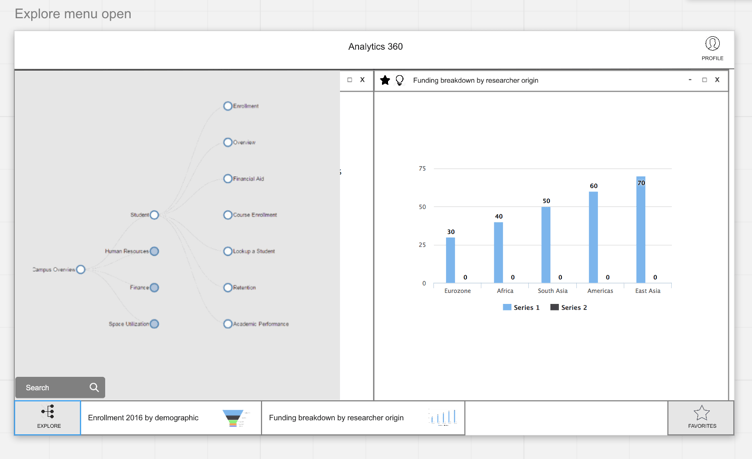
Visual design
I began by reviewing the existing designs on the university site. The current scheme is very simple, a few colors and a web-standard typeface — so we didn’t have too many restrictions to begin with.
For graphing, we were going to need a few more colors, so I built out a new secondary palette that would align nicely with the existing set, inspired by some of the existing Colorado University photography.
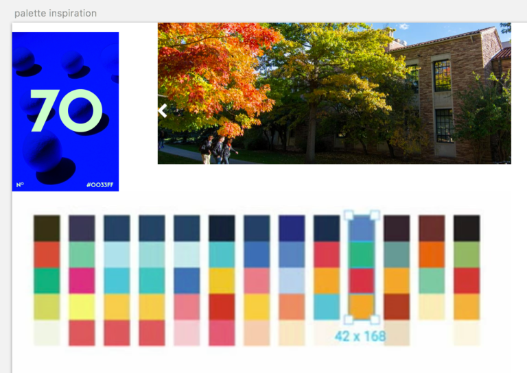
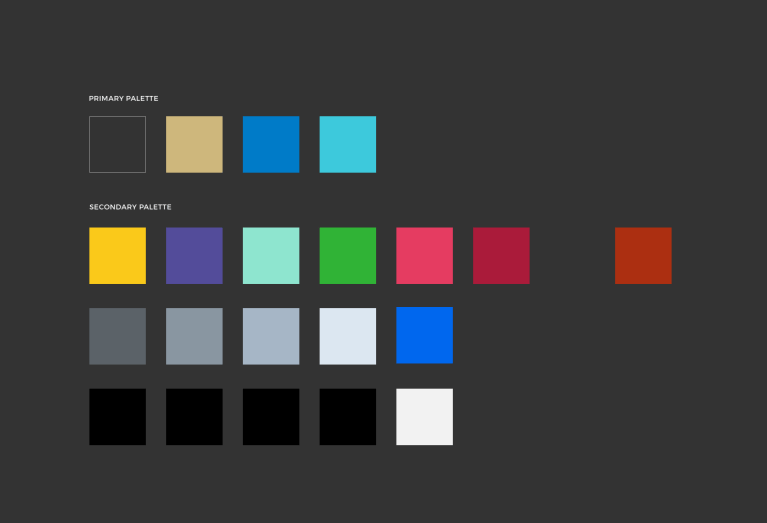
Palette & inspiration
Moodboard
To flesh out a visual direction, I also built a ‘moodboard’ of ideas from a variety of areas — my previous work, inspirational user interfaces, and ideas we might steal directly. (Link at the end).
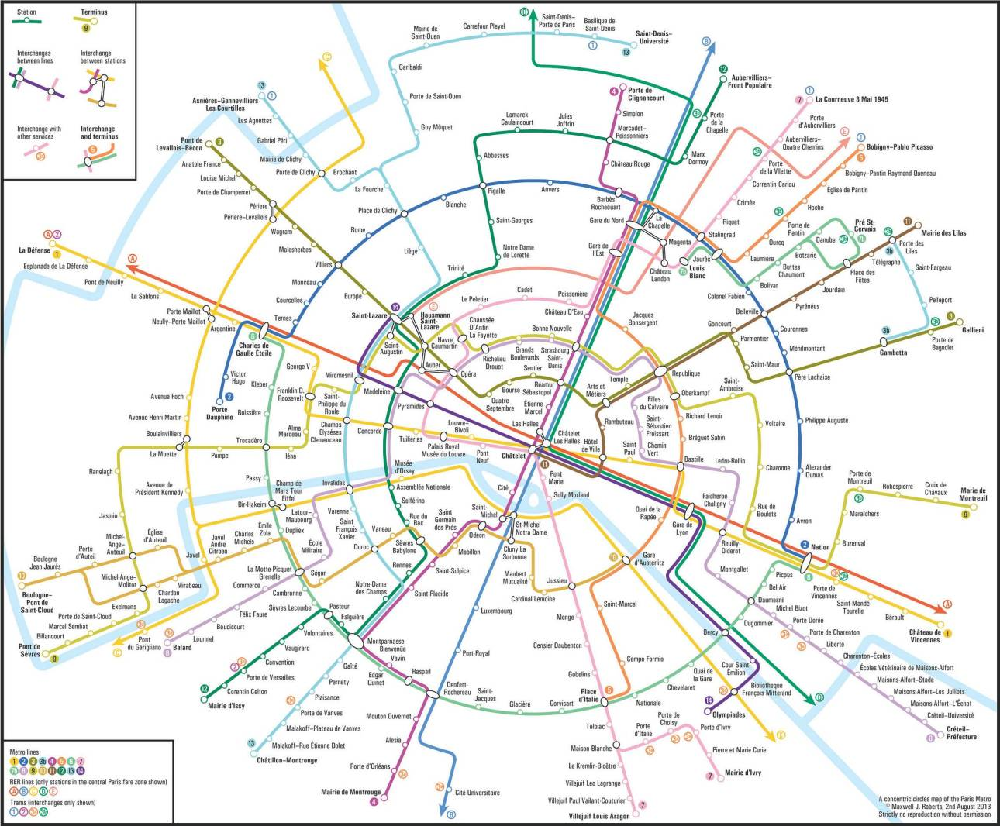
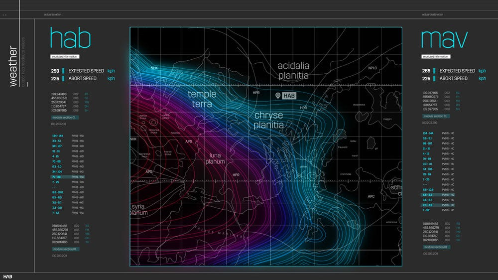
Moodboard examples. L: Paris Metro in circles. R: The Martian Film User Interface.
Next, using a few elements from a user interface template, I created some initial test designs for a login screen and ‘home’ environment — with the Flatiron mountains in the background.
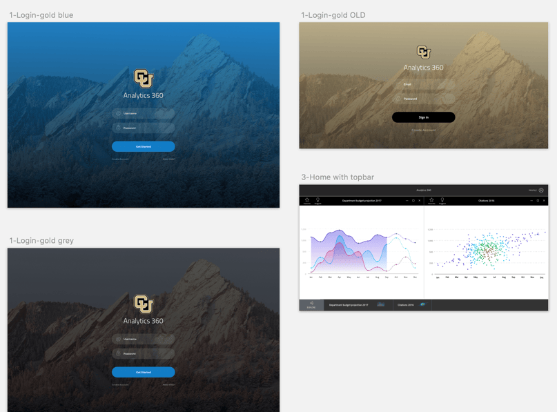
Login screen iteration
Logo
To help reinforce the visual identity of the app, we also created a logo for the department based on those iconic mountains — and how … graphlike they appear to those that way inclined.
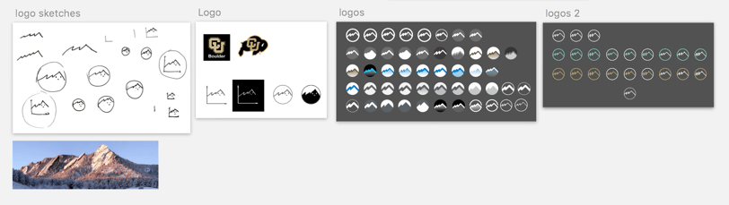
Logo tests, final on right.
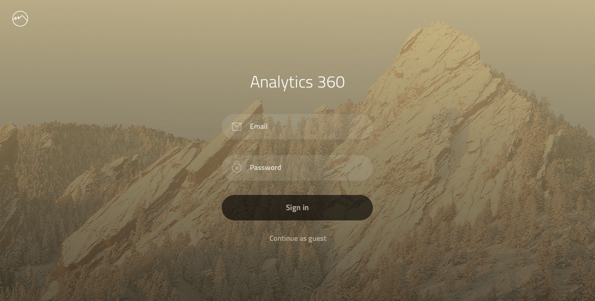
Monochrome logo in use as link to Reporting & Analytics Department, top left
Work in Progress
User-Centred Design Process
Now that we have established a basic structure for the application, our design process will be centred around our target users. Building on our initial interviews with Principal Investigators, we will be running regular usability testing sessions to make sure that we are on track to meet their needs.
A Flexible Dashboard System
We are aiming to build a flexible, ‘atomic’ dashboard structure, so that users can begin with templates, create exactly the view they need, and save it for easy access.
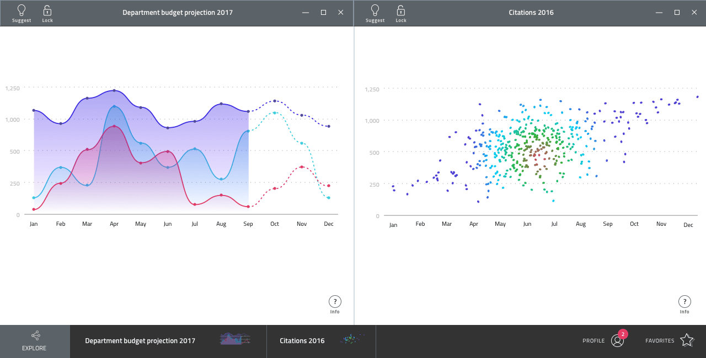
Main dashboard view, with windowing system
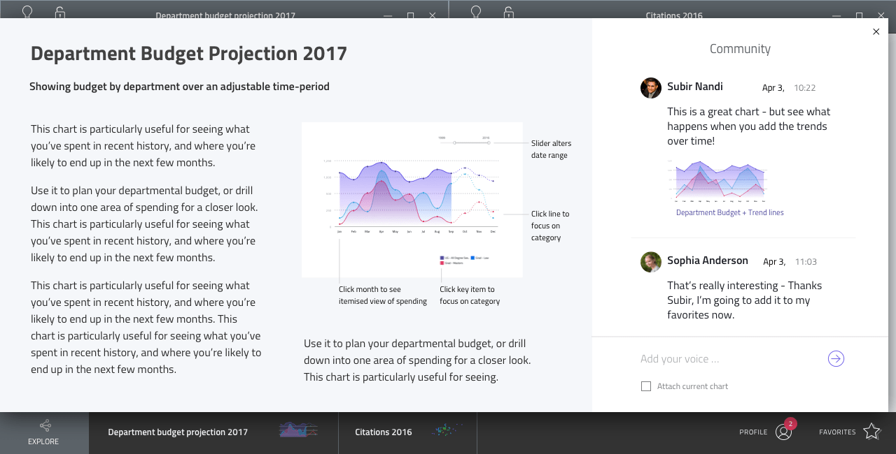
‘Information view’ for a chart, with social panel
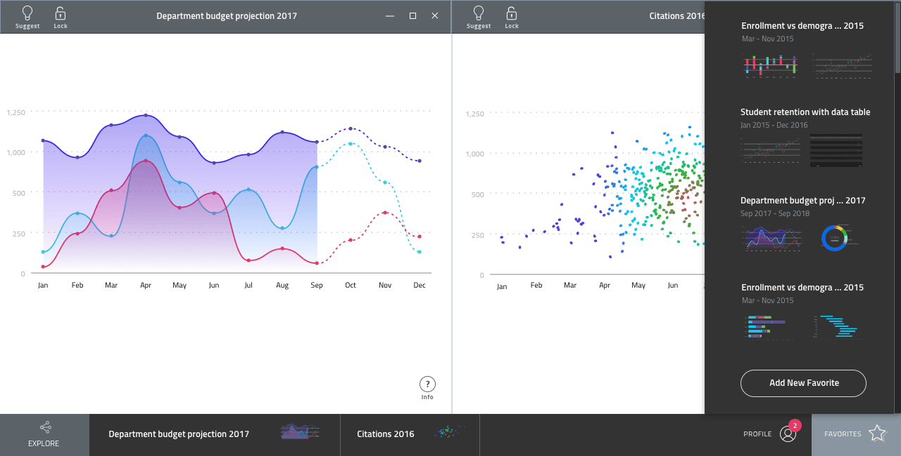
‘Favorites’ sidebar
The ‘Wikipedia’ Effect
We also hope to make the data across campus easily accessible and ‘connected’ — so that relationships between different data-sets are easily exposed and simple to follow. To this end we are experimenting with ‘Suggested’ or related data-sets, that will help users find the connections and gain new insights.
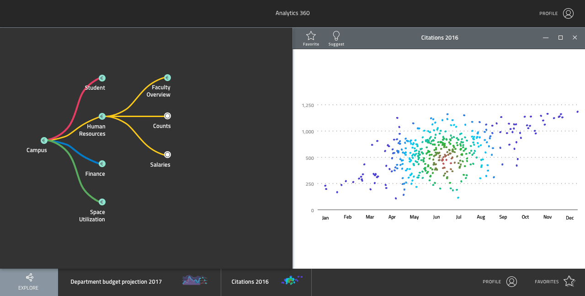
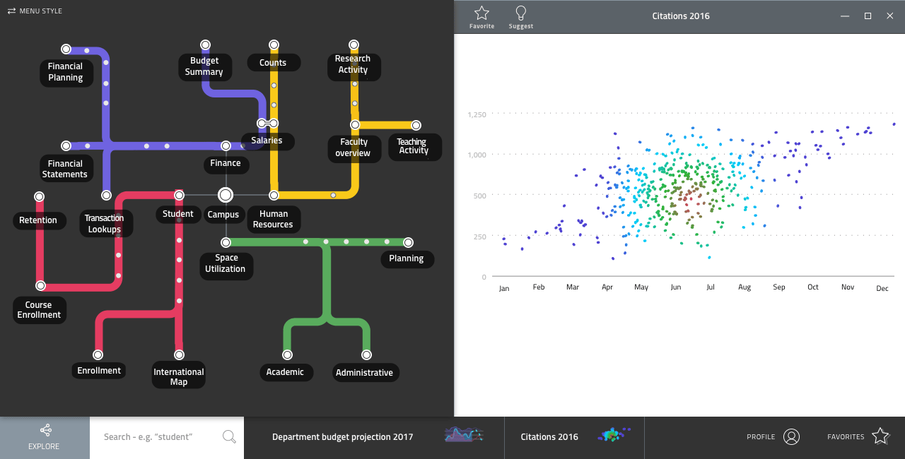
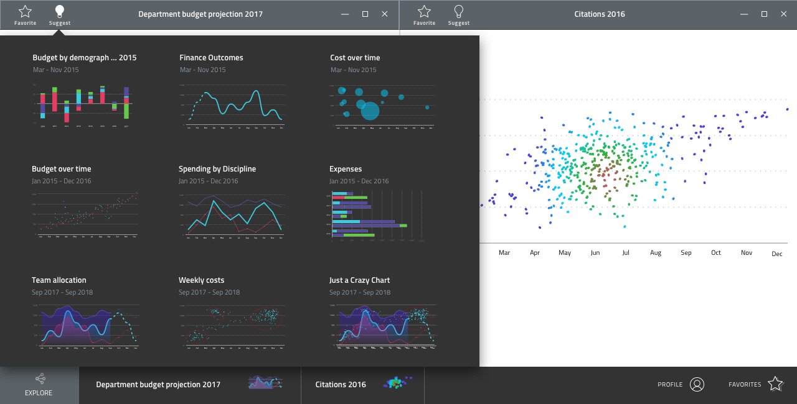
Navigation experiments and ‘suggested’ data-sets
Next Steps
We are now moving to the stage where we can get a live version of the site up for development and testing across our team of developers and designers. This will both accelerate development, and allow us to make sure that the product we are designing is the product that we deliver.
We’d love to hear your thoughts on our progress so far, and your hopes for the platform!